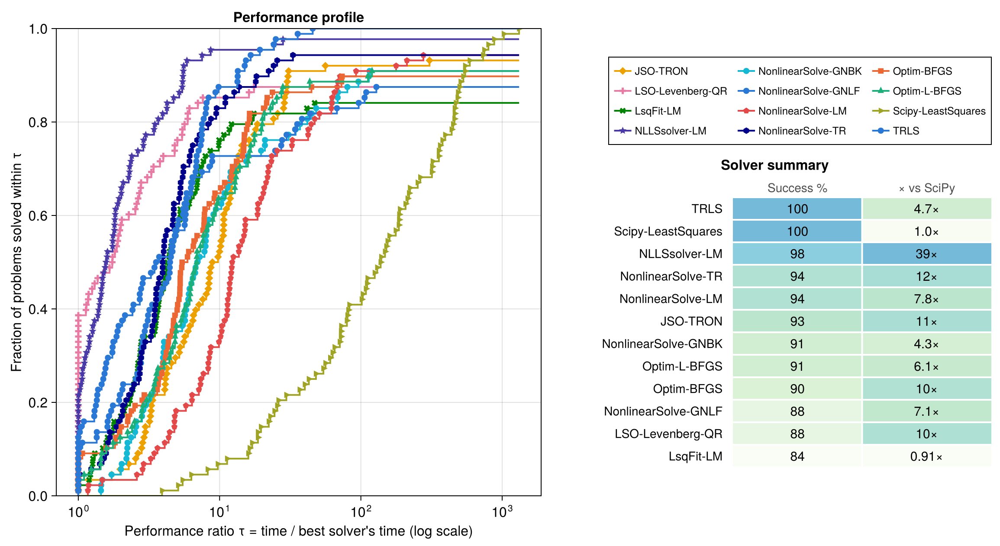
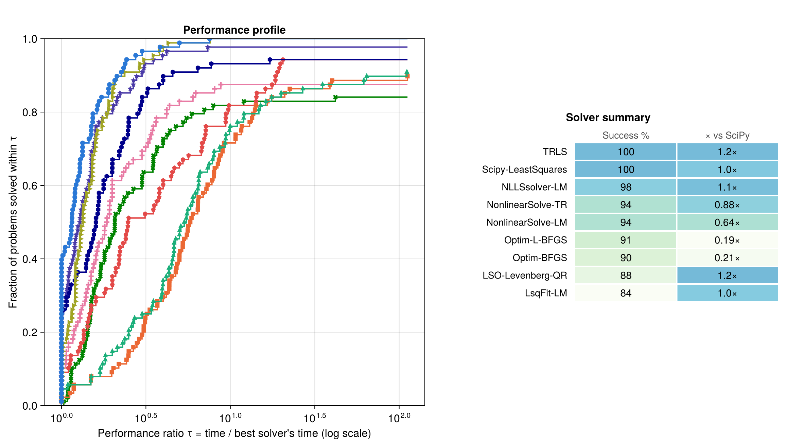
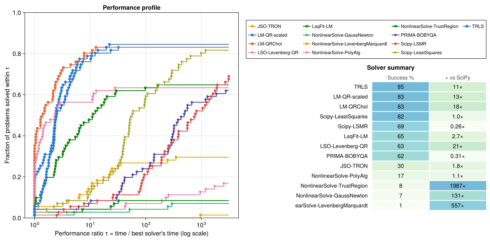

Benchmarks
Besides the methods, I have produced a complete benchmark suite comparing this implementation with other popular implementations in the Julia ecosystem. I have taken the SciPy solver as the baseline. SciPy uses the same exact trust-region strategy, albeit factorizing the Jacobian matrix $J$ by SVD, instead of the multiple factorization approaches in this repo.
Most implementations in the Julia ecosystem either implement the Levenberg–Marquardt method, which updates $\lambda$ heuristically, or solve the trust-region subproblem approximately using the dogleg approach. We also include Gauss–Newton methods with line search.
Solvers compared and test problems
| Solver (label in figures) | Package | Method |
|---|---|---|
| TRLS | TrustRegionLeastSquares.jl v0.1 | LM trust region, QRStrategy |
| NonlinearSolve-TR / -LM | NonlinearSolve.jl v4.30 | TrustRegion, LevenbergMarquardt |
| NonlinearSolve-GNBK / -GNLF | NonlinearSolve.jl v4.30 | GaussNewton with backtracking and with Li–Fukushima line search |
| JSO-TRON | JSOSolvers.jl v0.14 | TRON |
| LSO-Levenberg-QR | LeastSquaresOptim.jl v0.8 | Levenberg–Marquardt (QR) |
| LsqFit-LM | LsqFit.jl v0.16 | Levenberg–Marquardt |
| NLLSsolver-LM | NLLSsolver.jl v4.1 | Levenberg–Marquardt |
| Optim-BFGS / -L-BFGS | Optim.jl v2.3 | quasi-Newton on 0.5‖r‖² |
| PRIMA-NEWUOA / -BOBYQA | PRIMA.jl v0.2 | NEWUOA and BOBYQA (derivative-free; BOBYQA in the bounded run, both in the hard-problem run) |
| Scipy-LeastSquares | SciPy 1.18 (Python 3.13, via PythonCall) | least_squares (TRF) — the baseline |
Test problems come from NLSProblems.jl v0.5 (via NLPModels.jl); some CUTEst problems are used for the bound-constrained sets. Measured on Julia 1.12, macOS aarch64; exact package versions are pinned in benchmark/Manifest.toml.
The TRLS row runs the QRStrategy variant, which is what the figures show. The package default is QRCholStrategy, which is faster per iteration but squares the condition number; internal_variants.jl compares all four strategies against each other.
Remarks on timings and decisions made in this approach
- Every solver receives the same analytic residual and Jacobian, wrapped as in-place closures with buffers preallocated once, so no solver pays extra allocation or wrapper cost per evaluation. The exception is the TRON solver, which uses the structure from NLSProblems directly.
- Timing is the minimum over repeated solves (Chairmarks.jl), with problem construction excluded from the timed region.
- A run counts as a success only if it reaches the best cost found by any solver on that problem (within 1e-4). The success metric is therefore cost-based and independent of each package's self-reported convergence flag.
- There are caveats and limitations to this approach. Please do not take these numbers too strictly.
Metrics
Figures report Dolan–Moré performance profiles [DM02]: for each solver and problem, the performance ratio τ = time / best solver's time on that problem; the curve shows the fraction of all problems solved within τ. The height at τ = 1 reads as "how often is this solver the fastest", the right-hand asymptote as robustness. The summary table gives the success rate and the cumulative-time speed-up relative to the SciPy baseline.
Running it
# 1. Run the benchmarks (writes raw results to benchmark/results/*.csv)
julia --project=benchmark benchmark/scripts/compare_unconstrained.jl
julia --project=benchmark benchmark/scripts/compare_with_delay.jl
# 2. Build the figures from the saved results (seconds; no solver runs)
julia --project=benchmark benchmark/scripts/plot_results.jlBoth benchmark scripts accept MAX_VARS and PROBLEM_LIMIT environment variables for quick capped runs (e.g. PROBLEM_LIMIT=5 julia --project=benchmark ...). Plotting is deliberately decoupled from benchmarking: figure styling can be iterated without re-running solvers. Additional scripts cover bound-constrained problems (compare_bounded.jl) and internal subproblem-strategy comparisons (internal_variants.jl).
Results
Standard benchmark: cheap evaluations

Figure 1: Performance profile and summary on the full unconstrained NLSProblems set (88 problems). TRLS and SciPy are the only solvers that reach a 100% success rate, and TRLS gets there in 0.283 s of cumulative solve time against SciPy's 1.335 s. Solvers with steeper early curves (NLLSsolver, LeastSquaresOptim) are faster per problem but plateau below 100%.| Solver | Success % | Median iterations | Cumulative time |
|---|---|---|---|
| TRLS | 100.0 | 12.5 | 0.283 s |
| Scipy-LeastSquares | 100.0 | 13.0 | 1.335 s |
| NLLSsolver-LM | 97.7 | 13.5 | 0.034 s |
| NonlinearSolve-TR | 94.3 | 33.0 | 0.110 s |
| NonlinearSolve-LM | 94.3 | 39.0 | 0.171 s |
| JSO-TRON | 93.2 | 16.0 | 0.117 s |
| NonlinearSolve-GNBK | 90.9 | 16.0 | 0.312 s |
| Optim-L-BFGS | 90.9 | 33.0 | 0.219 s |
| Optim-BFGS | 89.8 | 32.0 | 0.133 s |
| NonlinearSolve-GNLF | 87.5 | 15.0 | 0.189 s |
| LSO-Levenberg-QR | 87.5 | 13.0 | 0.127 s |
| LsqFit-LM | 84.1 | not exposed | 1.470 s |
On these small, microsecond-scale problems, per-iteration overhead dominates and the lightest wrappers win the left side of the profile:
- NLLSsolver solves its 97.7% faster than anyone else. The package also enforces the use of StaticArrays, so perhaps not a fair comparison.
- Most Julia packages have very fast solvers, about an order of magnitude faster than SciPy's baseline method.
- Only TRLS and SciPy solve 100% of the problems to the minimum cost reported. Of the two, TRLS is about 5× faster.
Real-world benchmark: expensive evaluations
To simulate a realistic model — where each Jacobian evaluation means re-solving an ODE/PDE or running a simulation — the second benchmark injects a 200 ms delay into every Jacobian and gradient evaluation (the gradient Jᵀf requires the Jacobian, so gradient-based solvers pay it too).

Figure 2: Same 88 problems with 200 ms per Jacobian and gradient evaluation; colors and markers as in Figure 1. Evaluation count now dominates wall-clock, and the few-iteration LM methods cluster at the front.| Solver | Success % | Median iterations | Median time | Cumulative time | vs SciPy |
|---|---|---|---|---|---|
| TRLS | 100.0 | 12.5 | 2.34 s | 425.8 s | 1.16× |
| Scipy-LeastSquares | 100.0 | 13.0 | 2.66 s | 495.7 s | 1.00× |
| NLLSsolver-LM | 97.7 | 13.5 | 2.75 s | 444.3 s | 1.12× |
| NonlinearSolve-TR | 94.3 | 33.0 | 3.05 s | 566.0 s | 0.88× |
| NonlinearSolve-LM | 94.3 | 39.0 | 5.08 s | 780.2 s | 0.64× |
| Optim-L-BFGS | 90.9 | 33.0 | 8.43 s | 2567.6 s | 0.19× |
| Optim-BFGS | 89.8 | 32.0 | 9.15 s | 2330.1 s | 0.21× |
| LSO-Levenberg-QR | 87.5 | 13.0 | 2.64 s | 419.5 s | 1.18× † |
| LsqFit-LM | 84.1 | not exposed | 2.95 s | 518.2 s | 0.96× † |
† computed over that solver's own smaller successful set, so not comparable with the 100% rows.
This is the regime the solver is designed for: fewer steps beat cheaper steps once the model is expensive. The ordering inverts relative to Figure 1 — the lightest wrappers no longer win, because wrapper overhead is now invisible next to a 200 ms evaluation, and what is left is how many evaluations each method needs. TRLS has both the lowest median time and the lowest cumulative time of any solver at 100% success.
The Optim methods L-BFGS and BFGS (line-search quasi-Newton methods) pay the most, at roughly a fifth of the baseline's throughput. Their line searches evaluate the gradient several times per iteration, and every one of those costs 200 ms. That is the honest shape of the trade, and it is why those two rows carry a 15-minute wall-clock cap here (see Benchmark limitations).
Underdetermined problems
Every problem in the unconstrained set, with residual rows cropped so there are fewer equations than unknowns (crop_nls_functions). Each cropped problem has a zero-residual solution, generically a whole manifold of them, so the interesting question is not only whether a solver lands on the manifold but how far it travels to get there: a minimum-norm method stays near x0.
| Solver | Success % | Median iterations | Cumulative time | Median ‖x*-x0‖ |
|---|---|---|---|---|
| LM-QR-scaled | 100.0 | 4.0 | 0.022 s | 2.200 |
| TRLS | 100.0 | 4.0 | 0.052 s | 2.193 |
| NonlinearSolve-TR | 100.0 | 6.0 | 0.032 s | 2.190 |
| Scipy-LeastSquares | 100.0 | 16.0 | 0.833 s | 2.200 |
| NonlinearSolve-GNBK | 98.9 | 5.0 | 0.048 s | 2.200 |
| Optim-BFGS | 98.9 | 13.0 | 0.076 s | 2.200 |
| Optim-L-BFGS | 97.7 | 15.5 | 0.032 s | 2.200 |
| NonlinearSolve-GNLF | 96.6 | 5.0 | 0.021 s | 2.200 |
| NLLSsolver-LM | 96.6 | 6.0 | 0.019 s | 2.190 |
| NonlinearSolve-LM | 95.5 | 9.0 | 0.022 s | 2.035 |
| LSO-Levenberg-QR | 86.4 | 6.5 | 0.038 s | 2.200 |
| LsqFit-LM | 83.0 | not exposed | 0.027 s | 2.200 |
The strategy that is actually designed for this case is the LQ family, which returns the minimum-norm step through a complete orthogonal decomposition. internal_variants.jl scores it separately: LM-LQ reaches 100% with the highest min-norm rate (0.97 of problems within 1e-3 of the smallest ‖x*-x0‖ any variant found), and JacobianScaling measurably hurts there, dropping the rate to 0.80 — scaling pulls the step away from the minimum-norm direction.
Hard exponential fits, where this solver does not win
Six deliberately nasty exponential-fitting problems from Lukšan [Luk96], run both in their original parameterization and with x = exp(y). Parameters span orders of magnitude: A.3 starts at [0.02, 4000, 250] and A.5 at [1e5, 1e5, 1.08, 1.31].
| Variant | TRLS (no scaling) | TRLS + JacobianScaling | Best in field |
|---|---|---|---|
| Original | 2 / 6 | 4 / 6 | 4 / 6 (also NonlinearSolve-LM, NonlinearSolve-PolyAlg, LSO-DogLeg-QR) |
x = exp(y) | 4 / 6 | 4 / 6 | 6 / 6 (NonlinearSolve-PolyAlg) |
Two things this set is kept for, neither of them flattering:
- Scaling is not optional here. In the original parameterization, turning on
JacobianScalingtakes this solver from 2 of 6 to 4 of 6. Column-norm scaling is the whole difference between failing most of the set and matching the best anyone manages, which is the clearest argument for that option existing. On A.4 the two scaled variants are the only solvers in a field of 22 that reach the best cost at all. - A polyalgorithm beats a single method. Under the log reparameterization NonlinearSolve's
FastShortcutNLLSPolyalgsolves all six while this solver solves four. Switching strategies when one stalls is something this package does not do, and on problems like these it wins.
The regression guard in hard_luksan.jl is therefore on the scaled variant, not the default one: asserting that the unscaled configuration keeps working on problems that need scaling would be asserting the wrong thing.
Bound-constrained problems

Figure 3: Performance profile on 71 bound-constrained problems: CUTEst NLS problems (whose residuals are encoded as constraints), the bound-constrained NLSProblems set, and 15 hand-writtenADNLSModel problems with a mix of active and inactive bounds. TRLS leads on success rate and is an order of magnitude ahead of SciPy on cumulative time.| Solver | Success % | Median iterations | Cumulative time |
|---|---|---|---|
| TRLS | 84.5 | 18.0 | 0.081 s |
| LM-QR-scaled | 83.1 | 16.0 | 0.067 s |
| LM-QRChol | 83.1 | 18.0 | 0.048 s |
| Scipy-LeastSquares | 81.7 | 18.0 | 0.853 s |
| Scipy-LSMR | 69.0 | 17.0 | 3.267 s |
| LsqFit-LM | 64.8 | not exposed | 0.318 s |
| LSO-Levenberg-QR | 63.4 | 35.0 | 0.041 s |
| PRIMA-BOBYQA | 62.0 | 204 (nf) | 2.770 s |
| JSO-TRON | 29.6 | 21.0 | 0.477 s |
| NonlinearSolve-PolyAlg | 16.9 | 1449.5 | 0.743 s |
| NonlinearSolve-TrustRegion | 8.5 | 33.5 | 0.0004 s |
| NonlinearSolve-GaussNewton | 7.0 | 450.0 | 0.006 s |
| NonlinearSolve-LevenbergMarquardt | 1.4 | 450.0 | 0.002 s |
Three things to read carefully before citing the low rows:
- No solver violated its bounds on any problem, so none of these rates is a feasibility penalty.
- JSO-TRON's 29.6% is not a fair measure of the solver. TRON consumes the
NLPModelsmodel directly rather than the extracted residual/Jacobian closures the others get, and it refuses any model carrying general constraints: it declines 47 of the 71 problems, because the CUTEst problems encode their residuals as constraints. On the 24 it accepts it is competitive. - NonlinearSolve's low rates are a method limitation. NonlinearSolve treats bounds by transforming the
xvector (see their docs). That transformation has the drawback that the gradient goes to zero near the bounds, so the solver never explores the region around them. It is useful when the bounds are there to be unreachable, but the method will fail on problems whose solution touches or approaches one.
The two internal variants in the table (LM-QR-scaled, LM-QRChol) are there to show that the choice of factorization strategy barely matters on this set: all three sit within 1.4 points of each other. internal_variants.jl compares all eight strategy-and-scaling combinations properly.